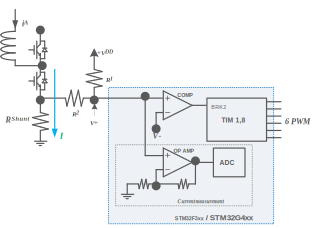
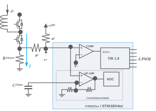
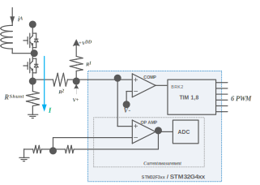

|
STM32 Motor Control SDK MCFW-6.1.0
Software Development Kit to build applications driving PMSM Motors with STM32
|
Loading...
Searching...
No Matches
|
STM32 Motor Control SDK MCFW-6.1.0
Software Development Kit to build applications driving PMSM Motors with STM32
|
The STM32F3 and STM32G4 microcontrollers feature an enhanced set of peripherals including comparators, PGAs, DACs and high-speed ADCs.
Figure 1 below shows a current sensing and overcurrent protection scheme that can be implemented using the internal resources of the STM32F302/303. The voltage drop on the shunt resistor, due to the motor phase current, can be either positive or negative, an offset is set by R1 and R2. The signal is linked to a microcontroller input pin that has both functionality of amplifier and comparator non-inverting.
Figure 1. Current sensing and overcurrent protection with embedded OpAmp and Comparators

This optimized configuration using an STM32F3 or an STM32G4 reduces the number of external components and microcontroller pins assigned to the MC application.
In order to maximize the resolution of the measurement, the PGA can be used to adapt the level of voltage drop in the shunt resistor ( \(R_{Shunt}\) ), caused by the motor current, up to the maximum range allowed by the analog to digital converter (ADC).
The PGA has a set of fixed internal gains (x2, x4, x8, x16) as presented in Figure 1. An alternative option in PGA mode allows you to route the central point of the resistive network on one of the I/Os connected to the non-inverting input. This feature can be used for instance to add a low- pass filter to PGA, as shown in Figure 2:
Figure 2. Current sensing with embedded OpAmp and external filtering

If a different value of amplification is required, it is possible to define the amplification network (for example, as shown in Figure 3).
Figure 3. Current sensing with embedded OpAmp and external gain

Finally, it is also still possible to set up the motor current measurement network to use external operational amplifiers, as with the other STM32 series. In this case the amplified signals are directly fed to the ADC channels.
The MC library can manage all the configurations shown here, thanks to the STM32 Motor Control Workbench. Refer to the STM32 motor control SDK documentation for more information.
The basic principle of the hardware over-current protection mechanism can be summarized as follows:
All of these actions can be performed using the internal resources of the STM32F3/STM32G4 and, in particular, the embedded comparators and the advanced timer break function (BRK2). As shown in Figure 1, Figure 2 and Figure 3, the same signal is fed to both not inverting input of embedded comparators and PGA.
The over-current threshold ( \(V^-\)) can be defined in three different ways:
Here too, the STM32 MC WB allows for all these configurations when creating a project based on STM32F3 or STM32G4 MCUs.
On the other hand, it is possible to setup the motor over-current protection network to use external components. In this case the over-current protection signal – coming from a comparator for instance – is directly fed to the advanced-timer's BKIN2 pin.
In any case, whether using embedded comparators or external components, a digital filter, placed before the BKIN2 function, can be enabled and configured in order to reject noises.
This section deals with the allocations of hardware resources for motor control applications based on STM32F3 or STM32G4 MCUs.
Depending on the chosen configuration – see the single-shunt current sensing section – 1 ADC, 1 OPAMP, 1 comparator, and or 1 DAC channel are to be assigned. Here are the conditions governing the allocation of these peripherals:
Depending on the configuration – see the three-shunt current sensing section – 2 ADCs, 2 OPAMPs, 3 comparators, 1 DAC channel must be assigned. Here are the conditions governing the allocation of these peripherals:
+ pins) to select are the ones linked to these specific PGA peripherals (and theirs + inputs);